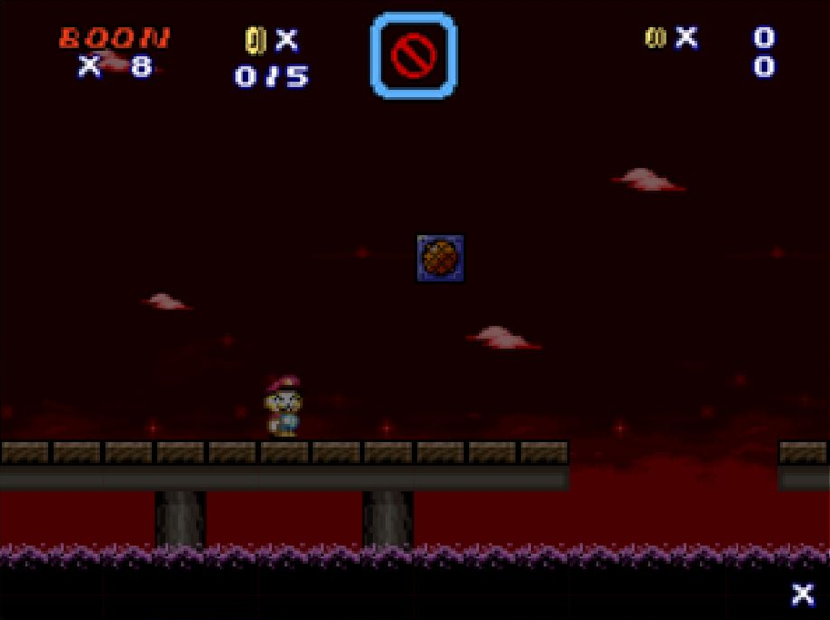

自作ステージ一覧です
| 難易度 | 説明 |
|---|---|
| ＢＡＳＩＣ | 簡単、普通にプレイしていれば死ぬ事は無い。 |
| ＡＤＶＡＮＣＥ | 普通、これが基準 |
| ＥＸＰＥＲＴ | 中級者向け、ちょっと難しい。 |
| ＭＡＳＴＥＲ | 中級者向け、頑張ればいける。 |
| ＷＯＲＬＤ’Ｓ ＥＮＤ | 上級者向け、かなり難しい。又はネタステージ。 |
| ＡＮＯＴＨＥＲ | 超上級者向け、難しいでは済まない。 |
| ステージ名 | 難易度 | コメント | 備考 |
|---|---|---|---|
|
ゴーストビーチ  |
ＥＸＰＥＲＴ |
Flash終了後初めて作ったステージです。 改造マリオで良く聞くBGMを使いたくて作ったステージです。 |
Ver.C |
| 闇と光の屋敷 | ＢＡＳＩＣ | okome氏開催の第三回短期制作大会の為に制作したステージ | Ver.C |
| 九色土管洞窟 | ＭＡＳＴＥＲ | 公式大会に添付した奴です。某氏のステージをオマージュしている。 | Ver.C |